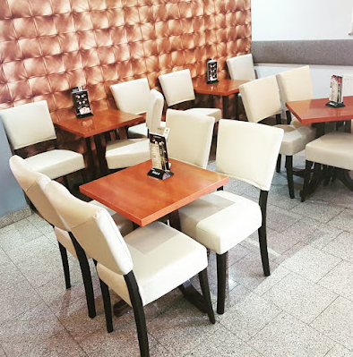

Mali caffe bar u Bukovcu, otvoren od 2014. Kava, biljar, sve utakmice na velikom ekranu, vikendom često živa muzika. Tu smo svaki dan od 7 ujutro do 11 navečer.

Mali caffe bar u Bukovcu, par stolova unutra i terasa kad je vrijeme za to. Susjedstvo nas dobro zna, dosta gostiju vraća se godinama, a ako svratiš drugi put — šanse su da ti konobar već zna ime.
Ujutro se najviše pije kava i sok prije posla, popodne dolaze učenici i mame s djecom, navečer ekipa za pivo i biljar. Vikendom obično svira netko uživo, a sve veće utakmice gledamo na velikom ekranu.
Više o namaEspresso, macchiato, cappuccino, latte i bijela kava. Aparat redovno servisiramo, mlijeko stiže svako jutro. Ako ti kava ne sjedne — vraćamo i radimo novu, bez pitanja.
Klasični biljar stol, slobodan kad nije zauzet (a često je). Štape i krede imaš tu, ne moraš ništa nositi. Najlakši način da pretvoriš jednu kavu u tri.
Vikendima često bude i živi nastup — gitara, akustika, ponekad cijeli bend. Bez najavljenog programa, ovisi tko nas tjedan navrati.
Mali smo, što ima i svojih plusova — rijetko gnjavi nepoznata buka. Susjedstvo, par stalnih ekipa i tko god se nađe usput. Cijene normalne, šank dovoljno blizu.